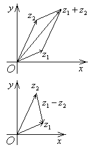

1.4. Действия над комплексными числами
, .
, если  и .
и .
и . , ,
, .
С геометрической точки зрения сложение (вычитание) комплексных
чисел равносильно сложению (вычитанию) изображающих их векторов.

В алгебраической форме:
- Сложение комплексных чисел в алгебраической форме ;
- Вычисление разности комплексных чисел в алгебраической форме ;
- Произведение комплексных чисел в алгебраической форме ;
- Нахождение частного комплексных чисел в алгебраической форме .
В тригонометрической форме:
- Вычисление произведения комплексных чисел в тригонометрической форме ;
- Нахождения частного комплексных чисел в тригонометрической форме .
Действия возведения в степень и извлечения корня удобнее
производить над комплексными числами, записанными в тригонометрической или
показательной форме:
Формула Муавра для
возведения комплексного числа в степень
(формула
Муавра)
Извлечения корня n-ой степени из комплексного числа в тригонометрической форме
,
где .
Корень  -й степени из комплексного
числа имеет различных значений:
-й степени из комплексного
числа имеет различных значений:
-й степени из комплексного
числа имеет различных значений: ,
,
 ,
,.
Числа имеют одинаковый
модуль, значения корня будут изображаться точками на одной окружности.
В показательной форме:
Произведение
комплексных чисел в показательной форме
;
Возведение в
степень комплексного числа в показательной форме
;
Нахождение
частного комплексных чисел в показательной форме
;
Извлечения корня n-ой степени из комплексного числа в показательной форме
.
Формулы Эйлера
, ,
, ,
так как .
Действия сложения и вычитания производятся только в
алгебраической форме, действия умножения и деления удобнее выполнять в показательной
форме, а тригонометрическая форма используется как переходная от алгебраической
к показательной и наоборот.